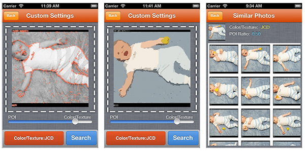

K3SimSearch is a simple Python script as a dictionary in which you can look up a GRE word and find its similar words (not synonyms but visual similarity). It works as a small tool for helping students to prepare for GRE.
This is a demo about viewing the graph of visually similar GRE words.
Name: Parocam
Time: 2015.12.20 iOSObjective-CGLSL
Parocam (有劲) is an iOS app which utilize GPUImage and Sensetime face detection and alignment technology. The name of the app comes from Parody Camera. It allows realtime recording with various creation modes, such as face features morphing, background changing and smart masks. With the help of the app, users can create a great many impressing short videos with their faces.
The app is on AppStore at the present. This work was mainly done during my early semesters in Tsinghua University. It is also one of the complete and comercial projects that I've done.
Name: PlanarSight
Time: 2015.6.16 C++Win32
PlanarSight is a course project for Computational Geometry (CS 7024-0183). The course taught by Dr Deng really impressed me and make me feel like diving to the world of computational geometry. This project is a small game made by some advanced algorithms like constrained Delaunay triangulation and visibility polygon construction.
Here is a snapshot about this game:
This project is open source, you can fork it from here.
This is a course project for Computer Graphics and Computer Aided Design. It simply triangulated the planar polygon into several triangles. In order to implement it with high performance, I read the paper and the open source project, poly2tri.
Here is a snapshot of the application:
This project is open source, you can fork it from here.
Name: Bukacracker
Time: 2014.7.20 JavaAndroid
Bukacracker is a web project totally for fun. This is a project done before I graduated from Nanjing university. At that time I can't afford an iPhone, so it is a problem that Buka manga (布卡漫画) doesn't provide a web edition or pc edition. It is really annoying. Thus, I decided to decompile their APK and figure out all the mechanisms of its communication with server side.
That's how it started. And here comes the web edition of Buka manga. The work has been published to OpenShift because of its low price. Therefore, you need to break the GFW to access it.
WebGLBrush is my final project for my bachelor's graduation. It's a pure front end project based on SculptGL. Inspired by ZBrush, a commercial software which do 3D modeling jobs with digital sculpting solution, I want to implement a web-based 3D sculpting modeling system as my final project.
It presents a big model as the scene in canvas and allows users' interaction to make sculption on the model. The algorithm behind will do subdivison on mesh surface and make specific movement for points on mesh along their normal direction. Thus an effect of WYSIWYG will be shown to users and it's a light-weighted solution for small modification of 3D models.
You can try it here. However, loading a model will be time-consuming.
Name: PocketNJU
Time: 2014.2.20 iOSObjective-C
PocketNJU is the first iOS app that I completed and submitted to AppStore. I worked at this project in my last year of my undergraduate education. The app is a handy tool for life in campus and it will help you a lot when you're studying in Nanjing University.
The version 1.x was basically made by me, while 2.x has been redesigned by other classmates and looked really fancy. However, the company which outsourced this work to us has already terminated the development for some reasons. It was still a great experience for me to participate in such a real-world project.
Name: Imagilar
Time: 2013.2.20 iOSObjective-CJava
Imagilar is a real-time image similarity search system on mobile platform.
With the rapid development of mobile intelligent devices and wireless communications, users are gradually changing the way of consuming interesting content from the traditional personal computers to smart phones. Hence, I implemented a brand-new content-based image similarity search system which runs on mobile platform in real time.

This project is accomplished during my internship in Univeristy of Queensland. I also published a short paper based on the project.